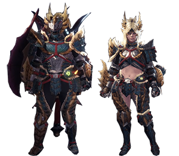
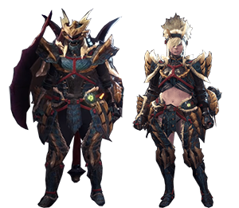
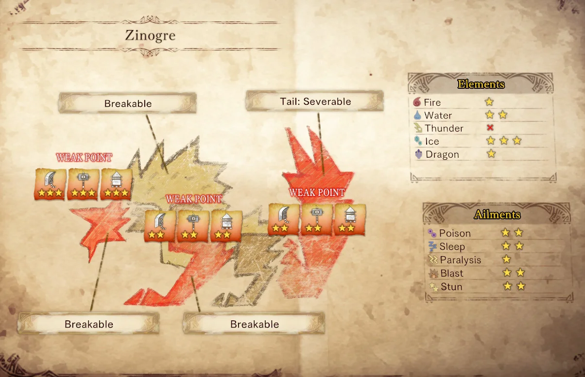

Le Zinogre est un des monstres emblématiques de Monster Hunter. En effet, dès sa première apparition dans Monster Hunter portable 3rd, son design, son thème rock et ses attaques ont su séduire les Fans. Le Zinogre est une Wyverne à croc au écailles bleues et dorées et à la fourure blanche. Grâce au Foudrinsectes qui vivent sur son dos, il est capable de manier la foudre, lui permettant d'infliger des dégats devastateurs.
On rencontre le Zinogre pour la première fois dans l'extension Iceborne, après avoir fini la campagne principale, dans la zone fraichement découverte des Guiding Lands. Celui-ci apparait avec un tout nouveau modèle 3d, plus détaillé et avec des proportions légèrement différentes des précédents opus.
On remarque aussi que son rugissement, son thème et ses attaques on été remaniées et remis au goût du jour.
Le Zinogre est très rapide. Enchainant et combinant attaques physiques et attaques à base de foudre, il est facile de finir etourdi en un rien de temps.
Il commencera le combat dans son état normal. Puis, au fur et à mesure qu'il s'enervera, sa fourure va se charger d'electricité: il sera alors plus rapide et plus puissant, ainsi qu'invulnerable aux pièges éléctrochocs.
Après avoir vaincu le Zinogre, le chasseur se retrouve nez-à-nez avec la sous espece du Zinogre:le Stygien.
Encore plus rapide et Furieux, ce Zinogre manie l'élément Dragon et vis dans les hauteurs enneigées des Guding Lands
|  |  |  |
| Armure Zinogre Alpha> | Armure Zinogre Beta | Tableau Forces/Faiblesses |